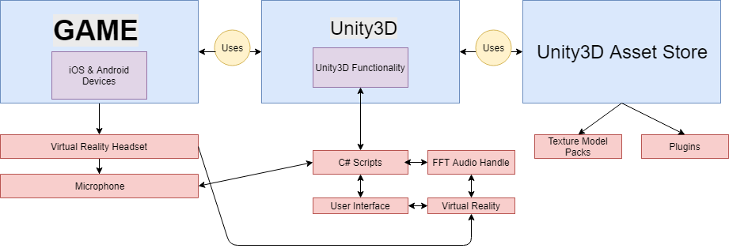

Design
3.1 Overview
Our group is using Unity 3D, Blender, C# scripts, and the Google Cardboard API to develop a Virtual Reality rail shooter game for iOS and Android phones. The player’s character will have a gun to shoot at various enemies to accumulate points. The game will lead the player through various landscapes, including cemeteries, catacombs, ancient tombs, and various other locations. The player will be able to aim the gun with their own sight in the VR headset. The player will fire the gun by clapping their hands; the resulting sound will be picked up by the phone’s microphone and processed by the game’s logic. The tentative name for the game is Spirit Mountain.
3.2 Environment
The primary environment for this game is as a mobile VR application. This will be accomplished using the Google Cardboard Virtual Reality system. This headset platform allows us to develop both an iOS and Android application that can be run on the vast majority of smartphones. The underlying game engine for this is Unity 3D, which allows us to readily create, test, and polish various aspects of the game during production. Connecting the Unity 3D project to the headset is the Google Cardboard API version 0.6, which gives us the largest amount of control over the project and how it is presented on the phone screen.
3.3 Module Descriptions and Data Flow

The game is designed to work on iOS and Android phones. The phones will be inserted into a VR headset, such as Google CardBoard. In order to play the game, the microphone of the phone (now part of the VR headset) will detect sound made by the user. This sound will be processed by C# scripts which will then display a shooting motion to the UI (the phone). The C# scripts process the sound through FFT (Fast Fourier Transform) Audio Handling. The C# scripts are part of the Unity 3D functionality, which is leveraged from the Asset Store. The Asset Store is where the texture models and various other plugins (such as the waypoint plugin) are located. As shown in the diagram above, all of these components are interconnected and dependent upon each other.